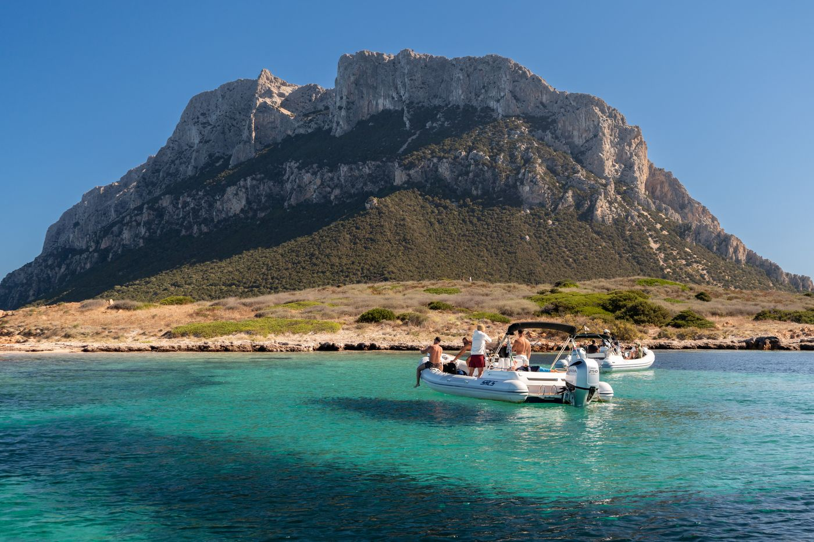
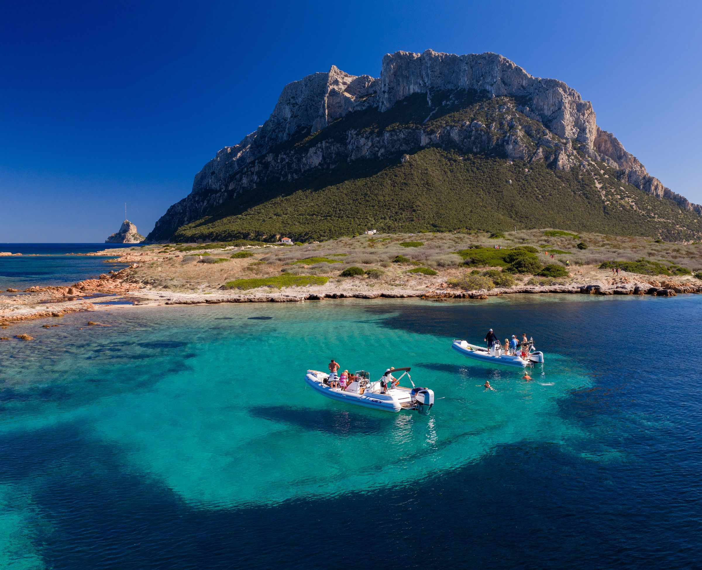
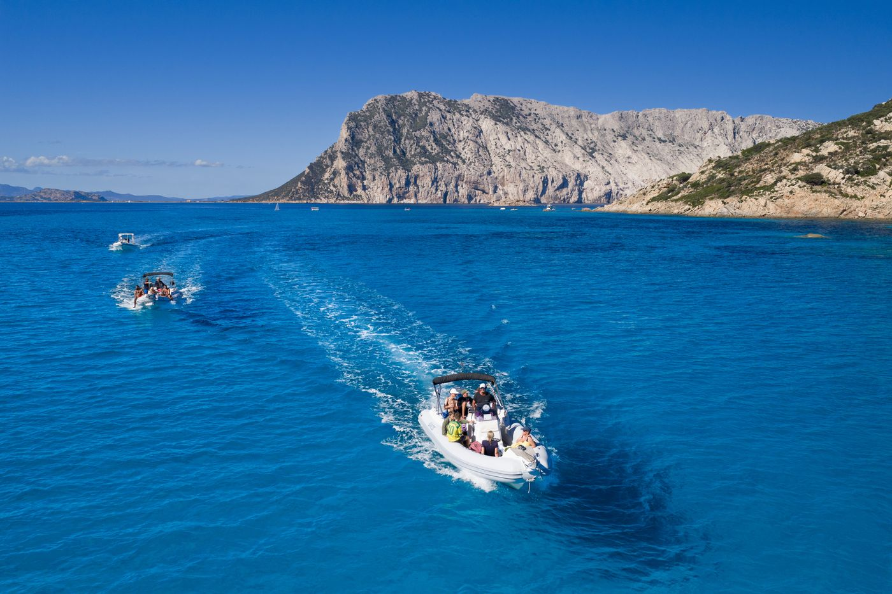
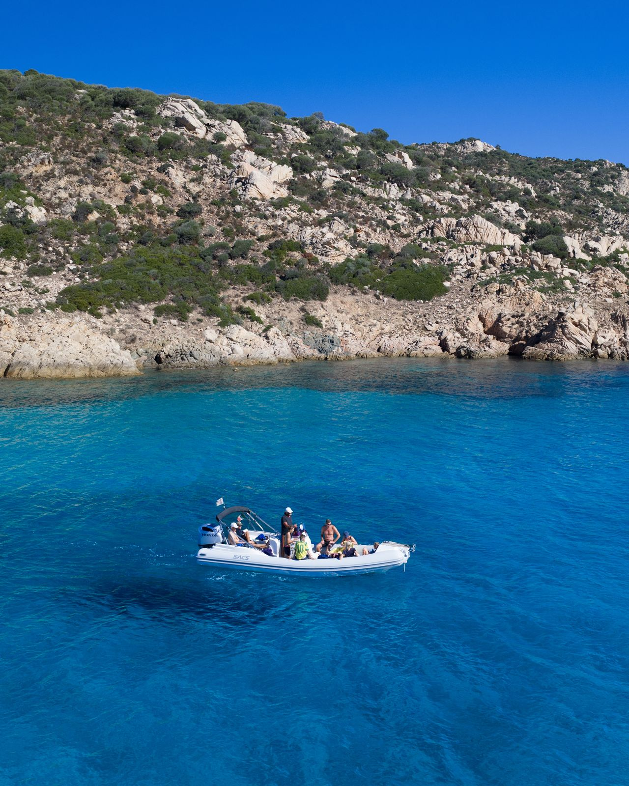
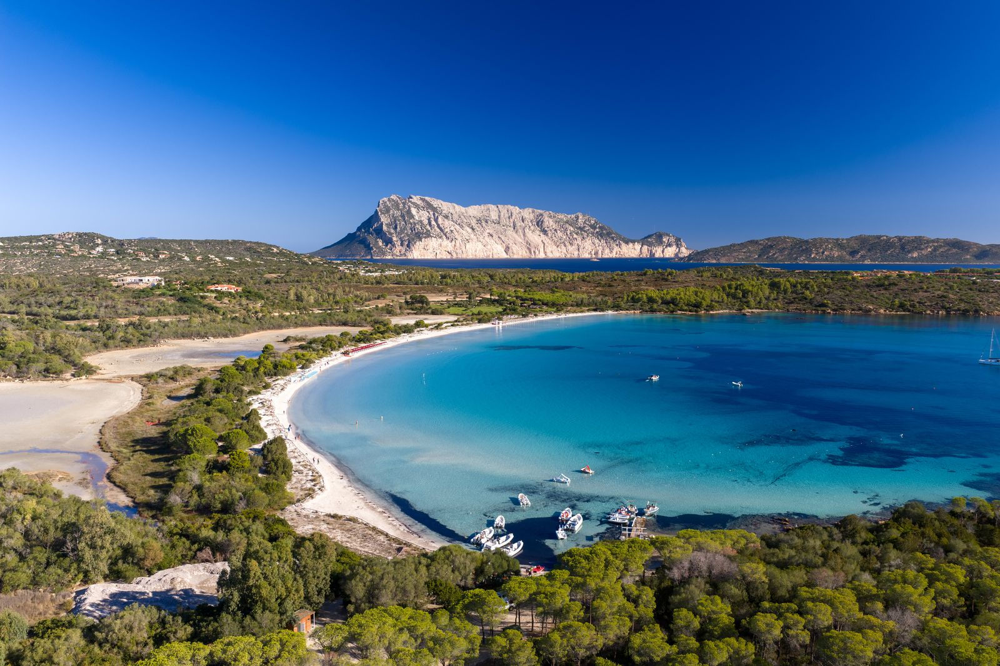

La più lungaUscita del mattino
Cinque ore tra Tavolara, Molara e Capo Coda Cavallo, con il mare ancora calmo e le calette più tranquille. Partenza e rientro a Cala Brandinchi.
80 €a persona
Prenota

Si parte e si rientra a Cala Brandinchi: in mezzo Tavolara, Molara e Capo Coda Cavallo. Uscita al mattino o al pomeriggio, 12 posti a bordo più lo skipper.
Posti liberi
Confermi con un acconto del 30% — il saldo lo paghi all’imbarco. Cancellazione gratuita per meteo avverso.
Niente porti né trasferimenti: si parte e si rientra a Cala Brandinchi.
Gruppi piccoli, soste vere, nessuna fila per scendere in acqua.
Alla guida c’è sempre un membro del nostro staff. Il prezzo che vedi è quello che paghi.
Acconto online con Stripe, conferma immediata via email e WhatsApp.
Al mattino o al pomeriggio, dal 1° maggio al 30 settembre. Partenza e rientro alla spiaggia di Cala Brandinchi, 12 posti per gommone più lo skipper.

La più lungaCinque ore tra Tavolara, Molara e Capo Coda Cavallo, con il mare ancora calmo e le calette più tranquille. Partenza e rientro a Cala Brandinchi.

Quattro ore sulla stessa rotta: Tavolara, Molara e Capo Coda Cavallo con la luce del pomeriggio. Partenza e rientro a Cala Brandinchi.
Si parte e si rientra a Cala Brandinchi. In mezzo l’Area Marina Protetta: Tavolara, Molara, Capo Coda Cavallo e calette raggiungibili solo dal mare.
Partenza dalla spiaggia dello stabilimento: fondale basso e sabbia bianca.
Il promontorio di granito con i suoi fondali chiari e le calette nascoste.
L’isola simbolo dell’Area Marina Protetta, con la sua parete calcarea a picco sul mare.
Le piscine naturali: acqua bassissima e trasparente, perfetta per lo snorkeling.
Si torna in spiaggia, dove ti aspettano docce, bar e ombrellone.
L’itinerario può cambiare in base al vento: lo skipper sceglie ogni mattina il lato dell’isola con il mare migliore.
Scegli la tua data
Famiglie, gruppi di amici, anniversari: il gommone è solo vostro. Alla guida c’è sempre uno skipper del nostro staff — non noleggiamo senza conducente. Il prezzo si concorda insieme: scrivici e ti rispondiamo in giornata.

Lo stabilimento balneare di Cala Brandinchi è casa nostra da anni. Arrivi, parcheggi, lasci le tue cose sotto l’ombrellone e sali in gommone. Al rientro trovi docce, bar e il tuo lettino ad aspettarti.
Nessun render, nessuna foto stock: tutto girato qui, tra Tavolara e Molara.
su 214 recensioni Google
“Partenza comodissima dalla spiaggia, gruppo piccolo e skipper che conosce ogni angolo dell’isola. Le piscine di Molara sono un’altra cosa viste così.”
“Abbiamo preso il gommone in esclusiva per il compleanno di mia moglie. Organizzazione perfetta e nessun costo nascosto: prezzo confermato, carburante incluso.”
“Con due bambini piccoli temevamo fosse troppo. Invece soste in acque calme, giubbotti per tutti e rientro puntuale. Rifaremo di sicuro.”
Non trovi la tua? Scrivici su WhatsApp, rispondiamo anche la sera tardi.
ScriviciOnline paghi solo l’acconto del 30% con carta (circuito sicuro Stripe). Il saldo lo versi all’imbarco, in contanti o con carta. Ricevi subito conferma e ricevuta via email.
Se le condizioni non permettono di uscire in sicurezza non si parte: ti avvisiamo entro la sera prima e scegli tu se spostare la data o farti rimborsare l’acconto per intero. Nessuna penale.
Sì. Le soste sono in acque riparate, a bordo ci sono giubbotti omologati di tutte le taglie e aiuti al galleggiamento. Sotto i 4 anni non si paga. Per neonati scrivici prima, valutiamo insieme l’uscita più tranquilla.
Si parte e si rientra alla spiaggia di Cala Brandinchi, davanti allo stabilimento. Il parcheggio è a pochi passi dall’imbarco. Ti chiediamo di arrivare 20 minuti prima della partenza.
Costume, telo, crema solare già applicata, cappello e acqua. Maschere, boccagli e giubbotti sono a bordo. Meglio evitare borse rigide e voluminose.
No. Le nostre imbarcazioni escono sempre con skipper a bordo: è una scelta di sicurezza e ci permette di navigare correttamente dentro l’Area Marina Protetta.
Dal 1° maggio al 30 settembre siamo operativi ogni giorno. Per il gommone in esclusiva, gruppi o richieste particolari scrivici: rispondiamo in giornata.